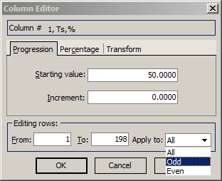
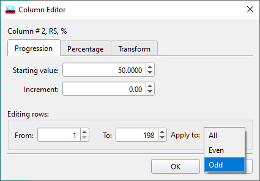
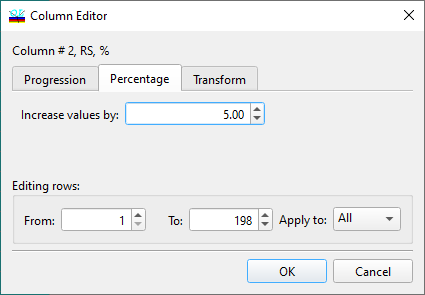
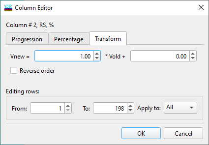

Column Editor
 Column Editor
Navigation: OptiLayer Menu Commands > Edit Menu >
Column Editor
` <copy_special.html>`__ ` <idh_menu_edit.html>`__ ` <idh_grid_generator.html>`__
The Column Editor is one of OptiLayer’s special Spreadsheet Editing Tools designed to provide fast and convenient modifications of spreadsheet columns. It is particularly useful when you need to enter a whole column of constants or a set of uniformly increasing or decreasing values. If no specific lines in the column have been marked (selected with the F7 key, displayed as highlighted entries), then the editor acts on the entire column. If a specific set of rows in the column has been selected, then the Column Editor will only act on the selected portion of the column.
The Column Editor is accessible from every place where you may need to edit a spreadsheet. You can activate it through the OptiLayer Edit menu, from the toolbar, or by pressing the F6 key. Some modal dialogs have special buttons to access the Column Editor.

When you start the Column Editor, it displays the spreadsheet column you are editing in the title bar. You can select which rows of the column will be edited by setting appropriate values in the Editing rows fields. By default, the whole column is chosen. However, if certain rows were selected in the spreadsheet, the edited rows initially displayed in the Column Editor Window will correspond to the selected ones. In the Apply to box, you can select one of the modes (All, Odd and Even) if you need to modify the values in a more specific manner. When editing design data the abbreviations of the design materials are appended to the Apply to edit choices. This additional option allows you to change only those cells of the design column that correspond to a selected material. To fill a column with identical values, enter the desired value in the Starting value edit box, and set the Increment box value to zero. If you set a positive increment, the column will be filled with an increasing sequence of values. You can enter a negative increment to obtain a decreasing sequence of values as well. The Column Editor also provides additional functionality through the Percentage tab. This tab allows the user to change selected values by a percentage of the current values rather than by an absolute value.

In this mode, it is possible to apply relative corrections (measured in percent) to the values of the selected column. Negative values are also permitted, allowing for the decrease of values as well. One more convenient operation is available through the Transform tab.

In this mode, you can specify a linear transformation relation as:
Vnew = a · Vold + b
where Vnew and Vold are the new and old values of the selected column cells, and a and b are the coefficients of the linear transformation. Additionally, it is possible to reverse the order of values.
 Note: It is possible to specify a range of rows
that is wider than the range of rows available in the current
spreadsheet. In this case, the spreadsheet will be expanded
accordingly to accommodate the specified range of rows.
Note: It is possible to specify a range of rows
that is wider than the range of rows available in the current
spreadsheet. In this case, the spreadsheet will be expanded
accordingly to accommodate the specified range of rows.
See also: Grid Generator.